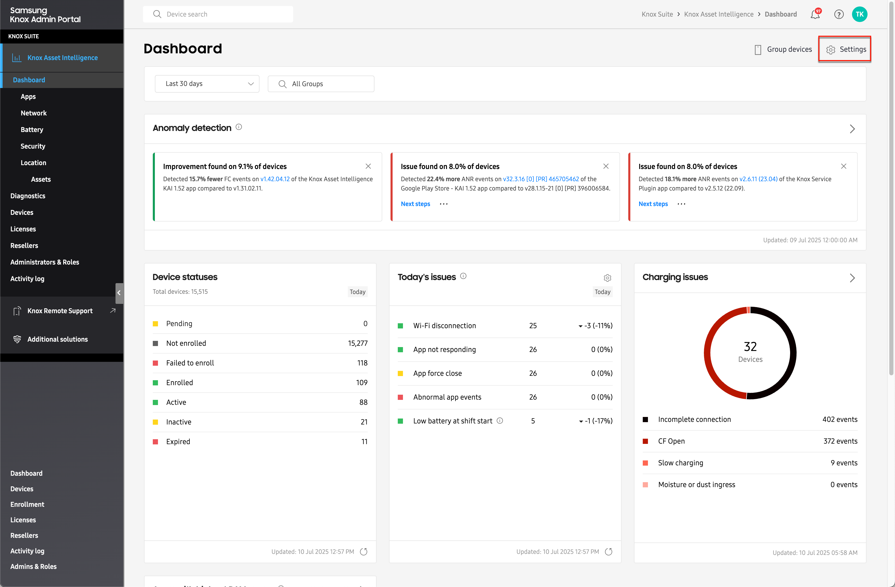

Configure dashboard settings
Last updated July 14th, 2025
After enrolling your enterprise devices in Knox Asset Intelligence, you’ll begin seeing your fleet’s health and usage data on the Dashboard. The Dashboard is ready to use immediately, with no initial setup or configuration required. To customize your dashboard layout, set data reporting thresholds, configure work shifts, or manage network latency tests, you’ll need to adjust your dashboard Settings.
To do this, click Dashboard in the left navigation pane, then click Settings.

Once you launch the dashboard Settings page, you’ll see the following tabs:
- Data conditions — Default tab. This tab lets you define when and how data gets collected, and the types of data that gets collected by the Knox Asset Intelligence service.
- Customize — This tab lets you define which tiles appear on your main Dashboard.
- Thresholds — This tab lets you set the conditions for when certain dashboard insights trigger alerts.
- Network — This tab lets you configure how Knox Asset Intelligence collects data for network related insights.
- Apps — This tab lets you configure how app data is collected and displayed on the Dashboard.
- Battery — This tab provides several options to help you optimize your fleet’s battery performance.
- Security — This tab lets you integrate with a third party Security Operations Center (SOC) and configure SOC environment and security log settings.
Depending on your admin permissions, you may not be able to modify certain dashboard settings. Consult your admin if you can’t access certain settings.
Is this page helpful?